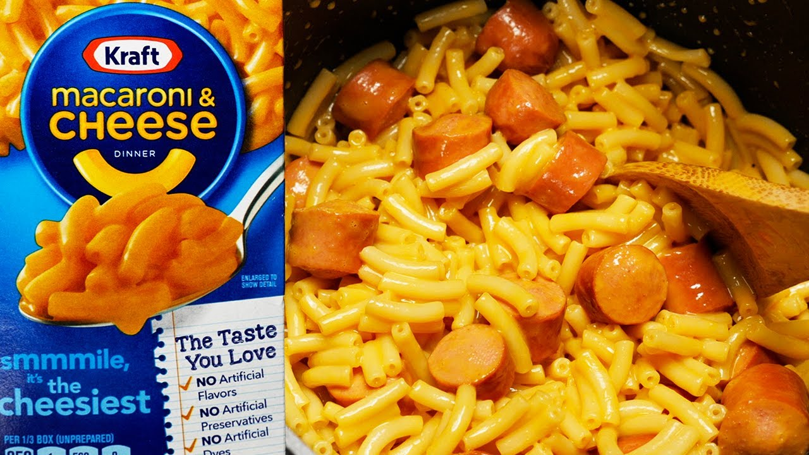

Kraft Mac and Dogs

Description
Simple: Kraft Mac and Cheese mixed with boiled hot dog slices. Not the healthiest, but it tastes good!
Ingredients
Yields 2 servings and takes approximately 20-30 minutes to make this meal, 30 minutes to prep and 30 minutes to cook.
- 1 box of Kraft Mac and Cheese
- 6 cups water and 2 cups of water
- 1/4 cup milk
- 4 tbsp butter (1/2 a stick)
- 2 hot dogs
- salt and pepper to taste (optional)
Steps:
- Put some salt in the 6 cup water pot.
- Boil 6 cups of water and 2 cups of water on separate stovetops.
- When 2 cups of water boil, put the two hot dogs in the pot and turn the heat down to medium. Let them cook/simmer for 4-5 minutes and then take them out.
- When 6 cups of water boil, pour in the noodles and let them cook for 7-8 minutes while ocassionally stirring.
- Chop the hot dogs into thin slices while the noodles are cooking.
- Once done cooking, drain the water from the noodles with a strainer and put them back in the pot (and also make sure you've moved your pot to a non-hot stovetop).
- Add milk and butter to the noodles and stir. Then add the cheese powder and stir. Finally, add the hot dog slices and stir.
- Add salt and pepper to taste, spoon into bowls, and serve!